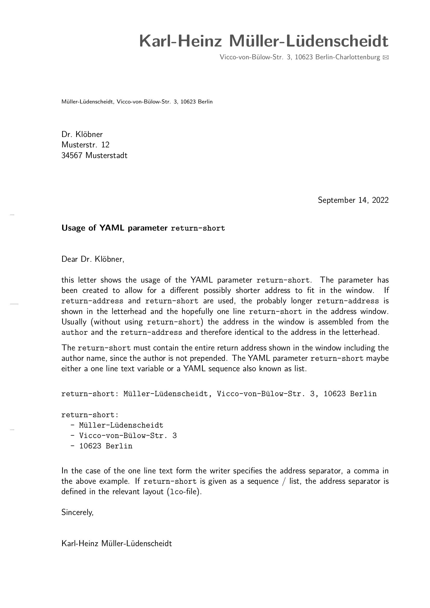

In addition to the YAML parameters shown in the first example, this example letter includes the parameter return-short which allows for a different, possibly shorter sender’s address to fit in the window.
---
author: Karl-Heinz Müller-Lüdenscheidt
return-address:
- Vicco-von-Bülow-Str. 3
- 10623 Berlin-Charlottenburg
return-short: Müller-Lüdenscheidt, Vicco-von-Bülow-Str. 3, 10623 Berlin
address:
- Dr. Klöbner
- Musterstr. 12
- 34567 Musterstadt
subject: Usage of YAML parameter `return-short`
opening: Dear Dr. Klöbner,
closing: Sincerely
signature: Karl-Heinz Müller-Lüdenscheidt
output: komaletter::komaletter
---
this letter shows the usage of the YAML parameter `return-short`. The parameter
has been created to allow for a different possibly shorter address to fit in
the window. If `return-address` and `return-short` are used, the probably longer
`return-address` is shown in the letterhead and the hopefully one line
`return-short` in the address window. Usually (without using `return-short`) the
address in the window is assembled from the `author` and the `return-address`
and therefore identical to the address in the letterhead.
The `return-short` must contain the entire return address shown in the window
including the author name, since the author is not prepended. The YAML parameter
`return-short` maybe either a one line text variable or a YAML sequence also
known as list.
```
return-short: Müller-Lüdenscheidt, Vicco-von-Bülow-Str. 3, 10623 Berlin
return-short:
- Müller-Lüdenscheidt
- Vicco-von-Bülow-Str. 3
- 10623 Berlin
```
In the case of the one line text variable the writer specifies the address
separator, a comma in the above example. If `return-short` is given as a
sequence / list, the address separator is defined in the relevant layout
(`lco`-file). PDF rendered via rmarkdown::render() or the RStudio Knit button from RMarkdown document above.
